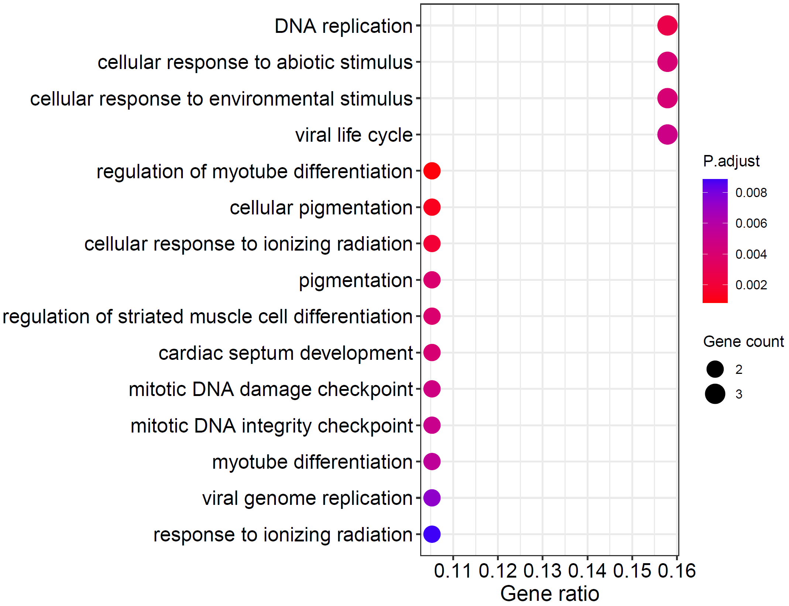

Case study: colocalization analysis in prostate cancer
2022-06-08
Source:vignettes/Colocalization_analysis_with_xQTLbiolinks.Rmd
Colocalization_analysis_with_xQTLbiolinks.RmdBefore we start.
All we need to prepare include three parts:
- GWAS summary statistics dataset.
- Name of tissue of interest.
- Following three installed packages.
Prostate cancer is one of the most common cancers in men. Prostate cancer pathogenesis involves both heritable and environmental factors. The molecular events involved in the development or progression of prostate cancer are still unclear. In this example, we aim to figure out the causal variants and genes assocaited with prostate cancer, and to uncover potential molecular mechanisms of regulation.
For data preparation, we download summary statistics dataset of a
GWAS study (GCST006085)
of prostate cancer from GWAS category and load the dataset in R with
data.table package. Correspondingly, we chose tissue
Prostate for study. We retain the variants with dbSNP id
(start with rs), and a data.table object named
gwasDF of 13,498,990 (rows) x 7 (cols) is loaded.
gwasDF <- fread("29892016-GCST006085-EFO_0001663-build37.f.tsv.gz")
# extract columns.
gwasDF<- gwasDF[str_detect(variant_id, "^rs"),.(rsid=variant_id, chrom=chromosome, position= base_pair_location, pValue=p_value, AF=effect_allele_frequency, beta, se= standard_error)]
# tissue:
tissueSiteDetail="Prostate"
head(gwasDF)#> rsid chrom position pValue AF beta se
#> 1: rs145072688 1 10352 0.46280 0.5753 -0.0094 0.0128
#> 2: rs376342519 1 10616 0.41070 0.0066 0.0572 0.0696
#> 3: rs201725126 1 13116 0.84470 0.8255 -0.0035 0.0178
#> 4: rs200579949 1 13118 0.84470 0.8255 -0.0035 0.0178
#> 5: rs75454623 1 14930 0.61880 0.4772 -0.0065 0.0131
#> 6: rs199856693 1 14933 0.02721 0.0407 -0.0794 0.0360Now we can perform quality control for this GWAS dataset by estimating the genomic inflation factor, validating QQ-plot and PZ-plot using xQTLbiolinks.
xQTLvisual_qqPlot(gwasDF[,.(pValue)])
xQTLvisual_PZPlot(gwasDF[,.(pValue, beta, se)]) Left is the QQ plot. The x-axis of the QQ-plot represents the expected
p-values under the null hypothesis, while the y-axis represents the
observed p-values from the GWAS summary statistics data. Right is the PZ
plot, he observed p-values on the y-axis and the corresponding p-values
derived from z-scores that estimated by beta and se on the x-axis.
Left is the QQ plot. The x-axis of the QQ-plot represents the expected
p-values under the null hypothesis, while the y-axis represents the
observed p-values from the GWAS summary statistics data. Right is the PZ
plot, he observed p-values on the y-axis and the corresponding p-values
derived from z-scores that estimated by beta and se on the x-axis.
Step 1: Filter sentinel snps.
Sentinel SNP is the most prominent signal within a given genome
range, and is usually in high LD with causal variants. By default,
xQTLbiolinks detect sentinel snps that with the p-value < 5e-8 and
SNP-to-SNP distance > 10e6 bp. Note: For in this
example, due to the inconsistent genome version between the GWAS dataset
(GRCh37) and eQTL associations (GRCh38) from eQTL category, conversion
of genome version is required, and can be conducted using
xQTLanalyze_getSentinelSnp with
genomeVersion="grch37" and grch37To38=TRUE
(package rtracklayeris required):
sentinelSnpDF <- xQTLanalyze_getSentinelSnp(gwasDF, centerRange=1e6,
genomeVersion="grch37", grch37To38=TRUE)A total of 94 sentinel SNPs are detected.
head(sentinelSnpDF)#> rsid chr position pValue maf beta se
#> 1: rs55664108 chr1 204587862 8.572e-25 0.7157 0.0912 0.0089
#> 2: rs35296356 chr1 150601662 3.355e-14 0.3384 -0.0690 0.0091
#> 3: rs34579442 chr1 153927424 4.478e-14 0.6637 -0.0655 0.0087
#> 4: rs146564277 chr1 155051619 1.577e-12 0.0301 -0.1850 0.0262
#> 5: rs34848415 chr1 205762038 2.893e-09 0.5231 -0.0501 0.0084
#> 6: rs56391074 chr1 87745032 1.659e-08 0.6298 -0.0466 0.0082Step 2: Identify trait genes for each sentinel SNPs.
Trait genes are genes that located in the range of 1Mb (default, can
be changed with parameter detectRange) of sentinel SNPs. In
order to reduce the number of trait genes and thus reduce the running
time, we take the overlap of eGenes and trait genes as the final output
of the function xQTLanalyze_getTraits:
traitsAll <- xQTLanalyze_getTraits(sentinelSnpDF, detectRange=1e6, tissueSiteDetail=tissueSiteDetail)Totally, 898 associations between 835 traits genes and 92 sentinel SNPs are detected
head(traitsAll)#> chromosome geneStart geneEnd geneStrand geneSymbol gencodeId
#> 1: chr1 205086142 205122015 - RBBP5 ENSG00000117222.13
#> 2: chr1 205142505 205211566 - DSTYK ENSG00000133059.16
#> 3: chr1 205336065 205357090 - KLHDC8A ENSG00000162873.14
#> 4: chr1 204828651 205022822 + NFASC ENSG00000163531.15
#> 5: chr1 204190341 204196486 - KISS1 ENSG00000170498.8
#> 6: chr1 204198160 204214092 - GOLT1A ENSG00000174567.7
#> rsid position pValue maf
#> 1: rs55664108 204587862 8.572e-25 0.7157
#> 2: rs55664108 204587862 8.572e-25 0.7157
#> 3: rs55664108 204587862 8.572e-25 0.7157
#> 4: rs55664108 204587862 8.572e-25 0.7157
#> 5: rs55664108 204587862 8.572e-25 0.7157
#> 6: rs55664108 204587862 8.572e-25 0.7157Step 3: Conduct colocalization analysis.
Following three steps of colocalization analysis are encapsulated in one function xQTLanalyze_coloc:
- Retrieved all associations from EBI eQTL catalogue for a specified gene.
- Merge the data.frame of GWAS and eQTL by rsid.
- Perform colocalization analysis using
colocandhyprcolocmethods.
For above 835 trait genes, a for loop can be used to get these genes’ outputs of colocalization analysis (this may take several hours):
# All genes:
genesAll<- unique(traitsAll$gencodeId)
# A data.table to save results:
colocResultAll <- data.table()
for(i in 1:length(genesAll)){
colocResult <- xQTLanalyze_coloc(gwasDF,
genomeVersion = "grch37", method="Both",
genesAll[i], tissueSiteDetail=tissueSiteDetail)
if(!is.null(colocResult)){ colocResultAll <- rbind(colocResultAll, colocResult$colocOut)}
message(format(Sys.time(), "== %Y-%b-%d %H:%M:%S ")," == Id:",i,"/",length(genesAll)," == Gene:",genesAll[i])
}In this case, we invoke two methods to conduct colocalization
analysis, (1). coloc that estimates the posterior support
of variants for each hypothesis: H0,H1,H2,H3,H4:
- H0 : neither trait has a genetic association in the region
- H1: only trait 1 has a genetic association in the region
- H2: only trait 2 has a genetic association in the region
- H3: both traits are associated, but with different causal variants
- H4: both traits are associated and share a single causal variant
and (2). hyprcoloc that calculates the posterior
probability that all traits share a causal variant.
Output is a data.table object that combined all results of
colocOut of all genes.
head(colocResultAll)#> traitGene nsnps PP.H0.abf PP.H1.abf PP.H2.abf PP.H3.abf
#> 1: ENSG00000001167.14 6205 2.072318e-15 0.2592617382 5.785196e-15 0.72375223
#> 2: ENSG00000002919.14 4883 2.252628e-42 0.0004579085 4.916915e-39 0.99949789
#> 3: ENSG00000003393.14 3901 4.134900e-03 0.5826462177 2.588394e-03 0.36468313
#> 4: ENSG00000003400.14 4549 7.800693e-05 0.0111580704 6.692117e-04 0.09483042
#> 5: ENSG00000005020.12 5271 1.551832e-32 0.4907383003 1.308029e-32 0.41354432
#> 6: ENSG00000005379.15 4413 9.273629e-03 0.4357011132 1.079004e-02 0.50690919
#> PP.H4.abf candidate_snp SNP.PP.H4 hypr_posterior hypr_regional_prob
#> 1: 1.698603e-02 rs9369290 0.2487894 0.0000 0.0079
#> 2: 4.420283e-05 rs138467395 1.0000000 0.0000 0.0174
#> 3: 4.594735e-02 rs59308963 0.1405084 0.0003 0.0126
#> 4: 8.932643e-01 rs12620010 0.2315255 0.7922 0.9931
#> 5: 9.571738e-02 rs17156041 0.6731519 0.0005 0.0373
#> 6: 3.732603e-02 rs2189681 0.3030656 0.0002 0.0129
#> hypr_candidate_snp hypr_posterior_explainedBySnp
#> 1: rs9369290 0.2752
#> 2: rs138467395 1.0000
#> 3: rs59308963 0.1434
#> 4: rs12620010 0.3882
#> 5: rs17156041 0.6855
#> 6: rs2189681 0.1829We can see that the two methodologies’ outcomes are quite consistent.
With a threshold of 0.75 for coloc and 0.5 for
hyprcoloc, a total of 24 colocalized genes are shared.
library(VennDiagram)
T <- venn.diagram( list(colocOut = colocResultAll[PP.H4.abf>=0.75]$traitGene,
hyprcolocOut = colocResultAll[hypr_posterior>=0.5]$traitGene),
filename = NULL,lwd=1,lty=1, width = 8000, height = 10000,
fill=c('#ff7a45','#597ef7'), col=c('red','blue'), cat.col=c('red','blue'),
main.cex = 0.45, sub.cex= 0.1,
disable.logging = TRUE)
grid.draw(T)
To save time and go through this case as soon as possible, you can get the above result directly with:
colocResultAll <- fread("http://raw.githubusercontent.com/dingruofan/exampleData/master/colocResultAll.txt")Step 4: Visualization of the results.
We considered colocalization tests with a posterior probability of hypothesis 4 (PPH4.ABF) > 0.75 & hypr_posterior > 0.5 as having strong or moderate evidence for colocalization.
colocResultsig <- colocResultAll[PP.H4.abf>0.75 & hypr_posterior>0.5][order(-PP.H4.abf)]There are 24 trait genes that are associated and share a single causal variant:
head(colocResultsig)#> traitGene nsnps PP.H0.abf PP.H1.abf PP.H2.abf PP.H3.abf
#> 1: ENSG00000137673.8 7108 3.722120e-16 7.637674e-04 1.159909e-15 0.001382244
#> 2: ENSG00000167641.10 5034 2.405778e-32 1.349362e-05 8.271165e-30 0.003642818
#> 3: ENSG00000184058.12 6045 1.551367e-07 1.220850e-05 1.078421e-04 0.007494261
#> 4: ENSG00000115486.11 5389 1.594413e-24 5.835862e-07 2.875803e-20 0.009535535
#> 5: ENSG00000179409.10 6154 4.387457e-18 6.631626e-03 6.233624e-18 0.008437170
#> 6: ENSG00000277744.1 4616 1.043225e-19 1.214959e-02 6.298351e-20 0.006353677
#> PP.H4.abf candidate_snp SNP.PP.H4 hypr_posterior hypr_regional_prob
#> 1: 0.9978540 rs11568818 0.9999999 0.9993 0.9998
#> 2: 0.9963437 rs7247241 0.2491879 0.9911 1.0000
#> 3: 0.9923855 rs2238775 0.3010829 0.9778 0.9995
#> 4: 0.9904639 rs10175792 0.2836228 0.9830 1.0000
#> 5: 0.9849312 rs2740358 0.9401973 0.9869 0.9960
#> 6: 0.9814967 rs2079811 0.9999034 0.9924 0.9943
#> hypr_candidate_snp hypr_posterior_explainedBySnp
#> 1: rs11568818 1.0000
#> 2: rs4802297 0.2738
#> 3: rs2238775 0.3230
#> 4: rs10175792 0.3449
#> 5: rs2740358 0.8927
#> 6: rs2079811 1.0000All these genes’ details can be fetched with
xQTLquery_gene:
outGenes <- xQTLquery_gene(colocResultsig$traitGene)Add the value of PPH4 for each gene, and remove non-protein-coding genes:
outGenes <- merge(colocResultsig[,.(gencodeId= traitGene, PP.H4.abf, candidate_snp, SNP.PP.H4, hypr_posterior)],
outGenes[,.(geneSymbol, gencodeId, entrezGeneId, geneType)], by="gencodeId", sort=FALSE)
outGenes <- outGenes[geneType =="protein coding"]
outGenes#> gencodeId PP.H4.abf candidate_snp SNP.PP.H4 hypr_posterior
#> 1: ENSG00000137673.8 0.9978540 rs11568818 0.99999989 0.9993
#> 2: ENSG00000167641.10 0.9963437 rs7247241 0.24918793 0.9911
#> 3: ENSG00000184058.12 0.9923855 rs2238775 0.30108289 0.9778
#> 4: ENSG00000115486.11 0.9904639 rs10175792 0.28362278 0.9830
#> 5: ENSG00000179409.10 0.9849312 rs2740358 0.94019727 0.9869
#> 6: ENSG00000117280.12 0.9701717 rs708723 0.31910829 0.9428
#> 7: ENSG00000184012.11 0.9652282 rs6517673 0.37410718 0.9127
#> 8: ENSG00000069275.12 0.9625282 rs823154 0.29904947 0.9364
#> 9: ENSG00000099331.13 0.9607259 rs11666569 0.24161844 0.9293
#> 10: ENSG00000155749.12 0.9538274 rs7560328 0.20927651 0.8966
#> 11: ENSG00000118961.14 0.9294589 rs9306895 0.48924035 0.7300
#> 12: ENSG00000101751.10 0.9271138 rs3730783 0.08842167 0.8321
#> 13: ENSG00000172613.7 0.9099755 rs35826789 0.69464894 0.9038
#> 14: ENSG00000180535.3 0.8941134 rs6465657 0.15229260 0.8643
#> 15: ENSG00000003400.14 0.8932643 rs12620010 0.23152548 0.7922
#> 16: ENSG00000115648.13 0.8889021 rs72620824 0.35924147 0.7378
#> 17: ENSG00000162877.12 0.8849219 rs1772159 0.28436834 0.5931
#> 18: ENSG00000204536.13 0.8733027 rs2517985 0.12887177 0.7333
#> 19: ENSG00000136819.15 0.8365468 rs13300897 0.12522776 0.7313
#> 20: ENSG00000065060.16 0.7937810 rs112283401 0.02533245 0.6114
#> 21: ENSG00000198625.12 0.7695907 rs2169137 0.12300108 0.6086
#> gencodeId PP.H4.abf candidate_snp SNP.PP.H4 hypr_posterior
#> geneSymbol entrezGeneId geneType
#> 1: MMP7 4316 protein coding
#> 2: PPP1R14A 94274 protein coding
#> 3: TBX1 6899 protein coding
#> 4: GGCX 2677 protein coding
#> 5: GEMIN4 50628 protein coding
#> 6: RAB29 8934 protein coding
#> 7: TMPRSS2 7113 protein coding
#> 8: NUCKS1 64710 protein coding
#> 9: MYO9B 4650 protein coding
#> 10: ALS2CR12 130540 protein coding
#> 11: LDAH 60526 protein coding
#> 12: POLI 11201 protein coding
#> 13: RAD9A 5883 protein coding
#> 14: BHLHA15 168620 protein coding
#> 15: CASP10 843 protein coding
#> 16: MLPH 79083 protein coding
#> 17: PM20D1 148811 protein coding
#> 18: CCHCR1 54535 protein coding
#> 19: C9orf78 51759 protein coding
#> 20: UHRF1BP1 54887 protein coding
#> 21: MDM4 4194 protein coding
#> geneSymbol entrezGeneId geneTypeRidgeline plot can be used to compare the expressions among these genes:
xQTLvisual_genesExp(outGenes$geneSymbol, tissueSiteDetail=tissueSiteDetail)
Trait gene MMP7 that with the highest
PPH4.ABF=0.9978 & hypr_posterior=0.9993
encodes a member of the peptidase M10 family of matrix
metalloproteinases, which is involved in the breakdown of extracellular
matrix in normal physiological processes, such as embryonic development,
reproduction, and tissue remodeling, as well as in disease processes,
such as arthritis and metastasis (“RefSeq,”
n.d.). Prostate cancer can be promoted via MMP7-induced
epithelial-to-mesenchymal transition by Interleukin-17 (Zhang et
al. 2017). Resent literature has shown that serum MMP7 levels
could guide metastatic therapy for prostate cancer (Tregunna 2020).
Expression of MMP7 in multiple tissues can be plotted with
xQTLvisual_geneExpTissues:
geneExpTissues <- xQTLvisual_geneExpTissues("MMP7", log10y = TRUE)
The number and significance of eQTLs in distinguished tissues are
capable of showing a tissue-specific effect or a ubiquitous effect. The
function xQTLvisual_eqtl can be used to indicate whether
the gene is widely regulation in various tissues.
xQTLvisual_eqtl("MMP7")Besides, we provide functions xQTLvisual_locusCompare
and xQTLvisual_locusZoom to visualize the colocalization
between the GWAS and the eQTL dataset for a specified gene, we take the
gene MMP7 as an example:
# Download all eQTL associations of gene MMP7 in prostate:
eqtlAsso <- xQTLdownload_eqtlAllAsso(gene="MMP7",tissueLabel = tissueSiteDetail)
# Merge the variants of GWAS and eQTL dataset by rsid:
gwasEqtldata <- merge(gwasDF[,-c("AF")], eqtlAsso[,.(rsid=snpId, pValue)],
by=c("rsid"), suffixes = c(".gwas",".eqtl"))Five retained fields are required:
gwasEqtldata#> rsid chrom position pValue.gwas pValue.eqtl
#> 1: rs10000104 chr4 10190142 0.2830 0.4986640
#> 2: rs10000248 chr4 10720872 0.0359 0.6089460
#> 3: rs10000318 chr4 11613397 0.5810 0.3734920
#> 4: rs10000369 chr4 11234631 0.0453 0.6642180
#> 5: rs10000399 chr4 11595842 0.2370 0.0948472
#> ---
#> 8007: rs9999345 chr4 10895379 0.0861 0.0100352
#> 8008: rs9999470 chr4 10315399 0.2300 0.0700527
#> 8009: rs9999523 chr4 11410463 0.9930 0.2258890
#> 8010: rs9999669 chr4 10852509 0.2470 0.0441530
#> 8011: rs9999767 chr4 10127270 0.8730 0.1902930Visualization of p-value distribution and comparison of the signals of GWAS and eQTL:
xQTLvisual_locusCompare(gwasEqtldata[,.(rsid, pValue.eqtl)],
gwasEqtldata[,.(rsid, pValue.gwas)], legend_position = "bottomright")
Locuszoom plot of GWAS signals:
xQTLvisual_locusZoom(gwasEqtldata[,.(rsid, chrom, position, pValue.gwas)], legend=FALSE)Locuszoom plot of eQTL signals:
xQTLvisual_locusZoom(gwasEqtldata[,.(rsid, chrom, position, pValue.eqtl)], legend=FALSE)
We can also combine locuscompare and locuszoom plot using function
xQTLvisual_locusCombine:
xQTLvisual_locusCombine(gwasEqtldata[,c("rsid","chrom", "position", "pValue.gwas", "pValue.eqtl")])
From the above figures, we can see that the SNP
rs11568818 is potential causal variant, and we can use a
violin plot to show the normalized effect size of it:
xQTLvisual_eqtlExp("rs11568818", "MMP7", tissueSiteDetail = tissueSiteDetail)
Extension: Integrative analysis with external packages or tools
To gain insight into the function of trait genes with higher PPH4, and explore the potential regulatory mechanism of the prostate cancer, we can conduct exploratory analysis, like co-expression analysis, and gene ontology enrichment analyses.
First we download expression profiles of the genes with higher value of PPH4 (>0.75) & hypr_posterior (>0.5) in prostate.
expMat <- xQTLdownload_exp(outGenes$gencodeId, tissueSiteDetail=tissueSiteDetail, toSummarizedExperiment =FALSE)Pearson coefficient can be calculated with the expression matrix for each gene:
corDT <- cor(t(expMat[,-1:-7]))
colnames(corDT) <- outGenes$geneSymbol
rownames(corDT) <- outGenes$geneSymbolR package corrplot is used to display this correlation
matrix:
library(corrplot)
corrplot(corDT, method="color",
type="upper",
order = "hclust",
addCoef.col = "#ff0099",
number.cex = 0.7) 
R package clusterProfiler is used for gene functional
annotation:
library(clusterProfiler)
library(org.Hs.eg.db)
ego <- enrichGO(gene = as.character(outGenes$entrezGeneId),
OrgDb = org.Hs.eg.db,
ont= "BP",
pAdjustMethod ="none",
readable = TRUE)
dotplot(ego, showCategory=15)
Viral-related GO terms are enriched in above analysis, including
"viral life cycle",
"positive regulation of viral life cycle" and
"positive regulation of viral process". Previous studies
have highlighted the role of viral infections in initiation or
progression of prostate cancer. The presence of viruses such as human
papillomavirus (HPV), herpesviruses including cytomegalovirus (CMV),
human herpes simplex virus type 2 (HSV2), human herpesvirus type 8
(HHV8) and Epstein-Barr virus (EBV) can infect the prostate (Abidi et
al. 2018). However, the causal variants’ genetic effects on
the phenotype and whether the trait genes has a direct association with
prostate carcinogenesis has not yet been established.